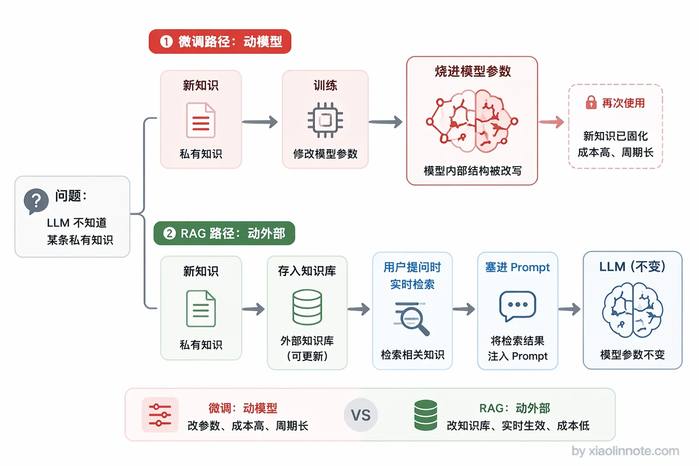
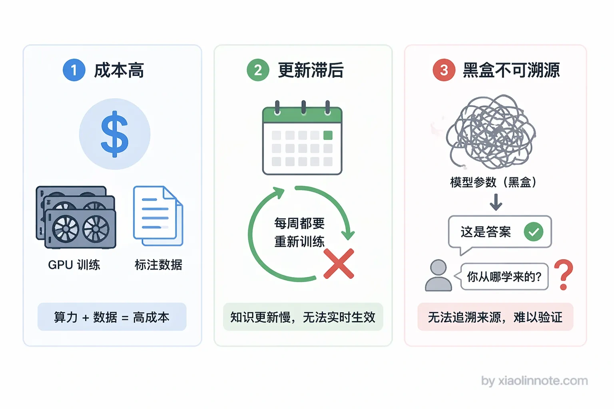
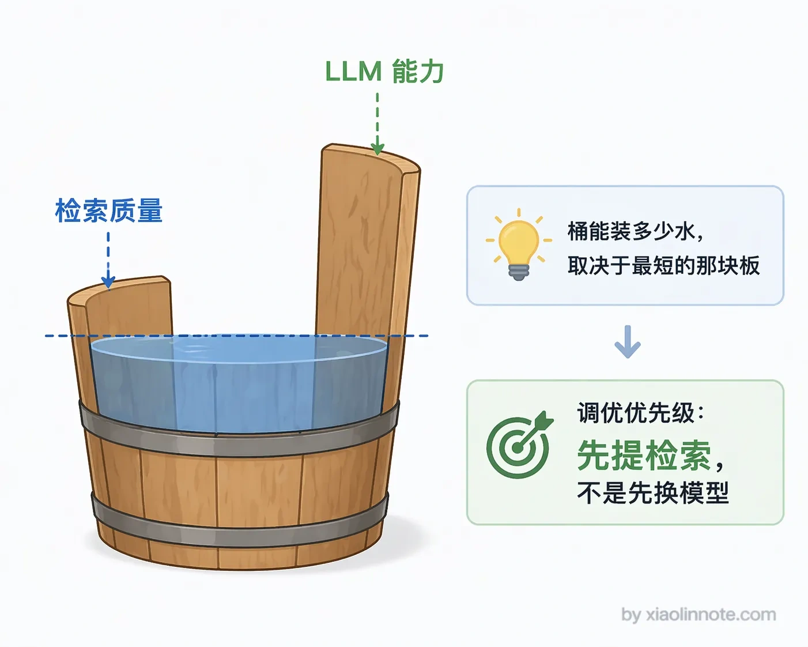
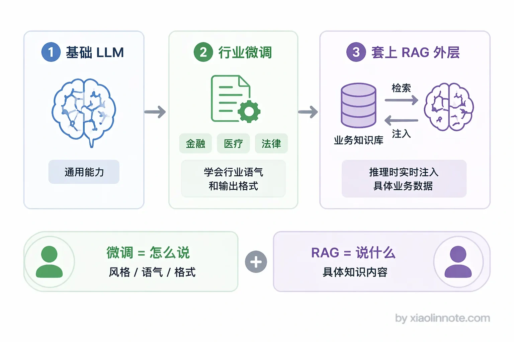

相比直接微调 LLM，RAG 解决了什么问题？微调和 RAG 各自的优劣势是什么？
👔面试官：RAG 和微调（Fine-tuning）有什么区别？各自适合什么场景？
🙋♂️我：微调就是拿自己的数据训练一下模型，RAG 也是拿自己的数据训练一下模型，只是方法不同。
👔面试官：……RAG 根本不训练模型，它是在推理时检索知识注入 prompt。你连这两个方案的本质区别都没搞清楚，一个改参数，一个不改参数，怎么能说「方法不同」呢？
🙋♂️我：好吧，那微调肯定更好吧？直接把知识写进模型，RAG 每次都要检索多麻烦。
👔面试官：更好？你公司的业务数据每周都在变，你每周都重新微调一遍？微调的成本你算过吗？而且微调出来的模型回答问题，你能追溯到是哪条知识在起作用吗？
🙋♂️我：呃……那我就选 RAG 呗，反正微调不好。
👔面试官：谁说微调不好了？你要让模型学会特定的输出格式、行业语气，微调才是正解。两个方案各有所长，还可以组合使用，你为什么非要二选一？
确实，这道题最容易犯的错就是二选一思维。下面我把微调和 RAG 的区别讲透，让你面试的时候能说清楚什么时候用哪个，什么时候两个一起用。
💡 简要回答
我的理解是这两个东西解决的不是同一层面的问题，不是谁替代谁的关系。
微调主要改变模型的行为、格式、风格或任务适配，也可能学习领域模式，但不应把它当作可靠、可更新、可溯源的知识库；RAG 是推理时检索外部证据，适合需要更新、权限控制或引用的知识场景。
如果目标是外部知识问答，先以 RAG 基线比较通常更容易验证；如果目标是稳定格式、风格或任务行为，再评估微调。选择还要看数据敏感性、更新频率、检索质量、延迟、成本和运维约束，而不是固定“首选”。
实际上这两个方案也可以组合用，先微调再套 RAG。
📝 详细解析
要搞清楚这个问题，先得区分参数化能力与外部知识。模型训练会把语言模式和部分事实编码进参数；发布后的参数不会自动随业务数据更新，但模型仍可通过上下文、工具和检索获得外部信息。
理解了参数与外部上下文的区别，就能理解两种方案的边界：微调改变模型行为/表示，RAG 在推理时提供可更新的外部证据；它们可以组合，但不等价。

微调（Fine-tuning）：把知识直接烧进模型
微调是继续训练或参数高效适配的方案，用数据改变模型的行为、格式、风格或任务能力。它可能帮助模型学习领域表达，但不能保证逐条记住事实或提供来源；推理时若不使用检索，确实少了检索链路，但总延迟还取决于模型大小和服务配置。
听起来很美好对吧？但微调的代价也很明显。
首先是成本，需要准备标注数据、租用 GPU、跑训练，时间和金钱成本都不低。
其次是知识更新的问题：频繁变化的数据若依赖反复微调，会增加数据准备、训练、验证、发布和回滚成本；具体周期与规模/方法有关，不能固定为几小时到几天。
第三是不透明，模型的回答来自参数里，你不知道它是从哪条知识推出来的，出错了也很难定位原因。很多人以为微调之后模型就「懂」了你的业务知识，其实模型只是记住了训练数据里的模式，它到底记住了什么、记错了什么，你根本无从得知。

RAG：不改参数，推理时现查知识
RAG 不改模型参数，而是在推理时检索外部资料并放入上下文。知识库更新仍需解析、切分、Embedding、索引发布、权限和缓存处理，不能简单理解为“加完就生效”；引用与错误定位需要额外保留来源和版本。候选 Embedding/存储方案要按数据合规、规模、成本和 SLO 选型，不能固定推荐某个厂商组合。
但 RAG 也并非完美。
首先是多了 Query 解析、Embedding、检索、重排和证据处理步骤，整体延迟可能增加，幅度取决于实现、并发、网络和缓存，需要测 P95/P99。
其次是「检索质量上限」问题，如果相关的 chunk 没被检索回来，LLM 再强也答不出来。你可能会觉得，换个更强的 LLM 不就好了？其实不是。
这里有个重要边界：生成层需要证据才能可靠回答，但它还会做推理、整合和引用，可能误读或越界；检索质量不是唯一瓶颈。RAG 调优应先用分层评估判断是解析、召回、重排、上下文、模型、Prompt 还是校验环节，再决定是否换模型或优化检索。

第三是对复杂推理能力提升有限，RAG 只是给模型提供了「参考资料」，但如果你需要模型对某个领域有更深的推理能力，光靠检索资料是不够的，还是得微调。
组合使用：微调解决「怎么说」，RAG 解决「说什么」
聊到这里你可能会问，既然各有优劣，那能不能两个都用？当然可以，而且实际工程里这恰恰是最常见的做法。一个典型的组合是：先对基础模型做一轮微调，让它学会输出格式、语气风格、行业术语；再用 RAG 来提供具体的知识内容。微调解决「怎么说」，RAG 解决「说什么」，各司其职。

把两种方案的核心差异对比起来，选型的时候更好做判断：
| 维度 | 微调（Fine-tuning） | RAG |
|---|---|---|
| 知识更新 | 需要重新训练，成本高 | 更新知识库即可，实时生效 |
| 推理延迟 | 低，无额外检索步骤 | 较高，多一次检索耗时 |
| 实现成本 | 高，需要 GPU 和标注数据 | 低，向量库 + Embedding 即可 |
| 答案可溯源 | 不支持，来自模型参数 | 支持，可追溯到具体 chunk |
| 适合场景 | 定制输出风格、深度专业能力 | 私有知识问答、动态更新数据 |
| 知识上限 | 受限于训练数据质量和规模 | 受限于检索质量和 context 长度 |
🎯 面试总结
回到开头那段面试，这道题最忌讳的就是「二选一」思维。
面试官问 RAG 和微调的区别，你要先说清本质：微调是改模型参数，RAG 是不改参数、推理时注入知识。然后各说优劣：微调擅长定制输出风格、培养深度专业能力，但成本高、更新慢、不可溯源；RAG 擅长知识频繁更新、答案可溯源的场景，但多了检索延迟、检索质量卡住上限。
最后一定要提到两者可以组合使用：微调解决「怎么说」，RAG 解决「说什么」。能把这个组合思路讲出来，面试官就知道你不只是背了定义，而是真正理解了怎么在工程里做选型。